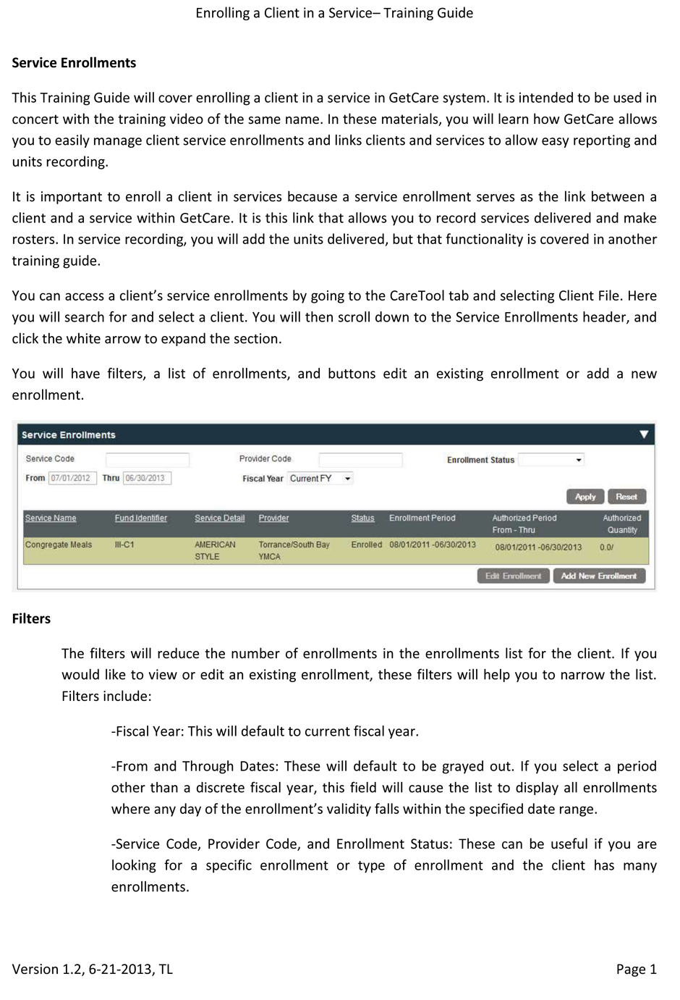
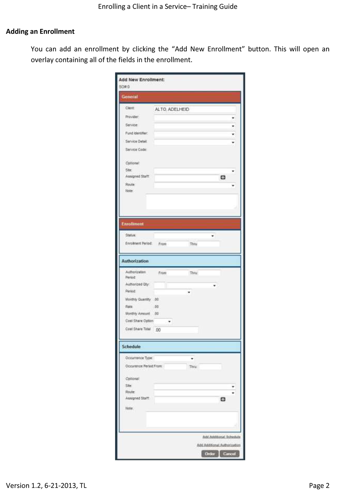
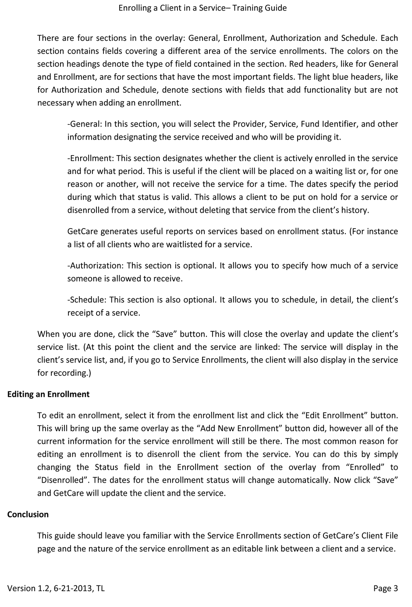

As part of the deliverables for a new system, we were required to make a series of ten training guides. Each one would cover a specific workflow.
When I was asked to create them, I first came up with a plan for the methodology of the guides as well a basic outline they would all use.
Each one would start with an explanation of what the user would learn and what the overall steps in the workflow were. For each location or major task in the workflow, the document would explain the following:
And at the end of the document, there was a summarized recap.
Once I had made the template, I started filling in each guide. For each document, I would first outline the locations and major tasks in the document. Next, I would outline the tools and steps for each task. I would then mark where the screenshots would go. My next step was to fill in the actual text of the document, connecting the outline's dots. When it was done, I would take the screenshots and add them in. Finally I would quickly proofread and then send them to the Product Manager for her edits before pushing them to the staging training site for the clients' edits and signoff.
The new training guide structure has worked really well. People are finding it much easier to work with entire tasks or workflows than the old structure, which focused on individual screens in isolation. 280 users were trained using my guides.
  